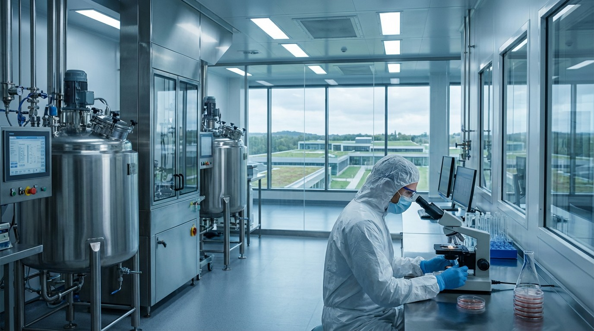

Lab-Grown Meat Cost $330,000 Per Pound in 2013. It's $6.97 Now.
Cultivated meat has undergone the steepest cost decline in food history. The question is no longer whether it can be made cheaply — it's whether anyone will buy it.

On August 5, 2013, Dr. Mark Post of Maastricht University served the world's first cultivated beef hamburger to food critics at a press event in London. The patty cost $330,000 to produce. It was funded by Google co-founder Sergey Brin. One taster said it was "close to meat" but lacked fat. The other said it was "not that juicy."
Twelve years later, cultivated chicken breast from UPSIDE Foods sells to select restaurant partners in the San Francisco Bay Area at a reported wholesale cost of approximately $6.97 per pound — a price decline of 99.998%. It is, by any measure, the steepest cost curve in the history of food technology.
But the story isn't that simple.
The Price Curve
| Year | Cost Per Pound | Milestone |
|---|---|---|
| 2013 | $330,000 | First public tasting (Mosa Meat, 5 oz burger) |
| 2015 | ~$18,000 | Memphis Meats (now UPSIDE) meatball demo |
| 2017 | ~$2,400 | Improved media formulations, serum-free attempts |
| 2019 | ~$200–$400 | Scale-up to 50L–200L bioreactors |
| 2021 | ~$50–$100 | GOOD Meat Singapore sales begin |
| 2023 | ~$17–$25 | UPSIDE & GOOD Meat receive USDA approval (US) |
| 2025 | ~$7–$10 | Pilot production at 5,000L–10,000L scale |
The cost decline has been driven primarily by three advances: serum-free growth media (which eliminated fetal bovine serum, the single most expensive input), continuous perfusion bioreactors (which keep cells fed without draining and refilling tanks), and cell line engineering (immortalized lines that proliferate faster with fewer doublings lost to senescence).
The Competitive Landscape
| Company | HQ | Total Funding | Product | Regulatory Status | Largest Bioreactor |
|---|---|---|---|---|---|
| UPSIDE Foods | Berkeley, CA | $608M | Chicken | FDA + USDA ✅ (US) | 10,000L |
| GOOD Meat (Eat Just) | Alameda, CA | ~$450M | Chicken | FDA + USDA ✅ (US), SFA ✅ (Singapore) | 6,000L |
| Mosa Meat | Maastricht, NL | $115M | Beef | EU application pending | 2,000L |
| Aleph Farms | Rehovot, Israel | $225M | Beef steaks | Israel ✅, EU pending | 5,000L |
| Believer Meats | Rehovot, Israel | $175M | Chicken | US application filed | 10,000L (NC facility) |
| SuperMeat | Tel Aviv, Israel | $23M | Chicken | Israel ✅ | 1,000L |
| Vow | Sydney, Australia | $97M | Quail (exotic) | Singapore ✅ | 2,000L |
Total venture investment in cultivated meat from 2016 through 2025 stands at approximately $3.1 billion, according to the Good Food Institute. That's less than Rivian raised in a single year. The industry has been chronically underfunded relative to its ambitions.
The Bioreactor Bottleneck
Here is where the optimistic cost-curve narrative runs into thermodynamics.
The largest cultivated meat bioreactors currently operating hold 10,000 liters. A single 10,000L batch produces roughly 400–800 kg of meat over a 2–3 week production run (depending on cell density and downstream processing efficiency). That's about 1,000–2,000 pounds per batch.
The United States consumed 223 pounds of meat per capita in 2024 — totaling roughly 74 billion pounds annually. To replace just 1% of US meat production with cultivated meat would require approximately 740 million pounds per year, or roughly 370,000 bioreactor batches at current yields. At 17 batches per year per reactor, that's 21,700 ten-thousand-liter bioreactors.
The pharmaceutical industry — which has been building bioreactors for decades — operates approximately 7,000 bioreactors globally above 1,000L capacity. The cultivated meat industry would need to triple the world's entire bioreactor fleet just to produce 1% of one country's meat.
"The cost per kilogram is a solved problem. The cost of the factory is the unsolved problem." — Josh Tetrick, CEO, Eat Just / GOOD Meat
The Taste Test Data
Taste is no longer the objection it once was. A 2025 blind taste study conducted by UC Davis's Department of Food Science (n=412) compared UPSIDE Foods cultivated chicken breast to conventional chicken across five sensory dimensions:
| Dimension | Cultivated | Conventional | Difference |
|---|---|---|---|
| Appearance | 7.2 / 10 | 7.8 / 10 | −0.6 |
| Aroma | 7.0 / 10 | 7.4 / 10 | −0.4 |
| Texture | 6.8 / 10 | 7.6 / 10 | −0.8 |
| Flavor | 7.1 / 10 | 7.5 / 10 | −0.4 |
| Overall Liking | 7.0 / 10 | 7.5 / 10 | −0.5 |
A half-point gap on a 10-point scale is statistically significant but commercially workable — particularly at a lower price point. When participants were told they were eating cultivated meat, "willingness to purchase" dropped from 72% to 54%. The label matters more than the taste.
The Regulatory Patchwork
The US remains the most advanced regulatory market. The FDA completed its first pre-market safety consultation for cultivated meat in November 2022 (UPSIDE Foods) and the second in March 2023 (GOOD Meat). USDA granted both companies inspection-mark approval in June 2023, making the US the first country with a full farm-to-fork regulatory pathway for two cultivated meat producers.
Singapore was first globally — approving GOOD Meat's chicken in December 2020 — but has approved only 4 products total and imposes strict labeling requirements.
Italy banned cultivated meat production and sale in November 2023. France is considering similar restrictions. The EU's Novel Food Regulation requires EFSA safety assessment before any cultivated product can be sold in Europe — a process expected to take 18–24 months from application.
Israel has approved 3 cultivated meat products for domestic sale and is positioning itself as a regulatory fast lane, partly because it imports 90% of its beef.
The Market Reality
As of March 2026, cultivated meat is commercially available in exactly three countries: the United States, Singapore, and Israel. Total global production volume is estimated at fewer than 100,000 pounds per year — approximately 0.000001% of world meat production. At $7–10/lb wholesale, it's roughly competitive with premium organic chicken breast ($6–$9/lb at retail), but the volumes are so small that "market share" is a meaningless concept.
The industry's near-term path runs not through supermarkets but through food service — high-end restaurants and institutional cafeterias where the novelty premium and sustainability narrative command a markup. UPSIDE Foods supplies approximately 30 restaurants in the Bay Area. GOOD Meat operates a single restaurant in Singapore (Huber's Butchery) and has launched in two Washington, D.C. establishments.
The Bottom Line
The 99.998% cost decline from $330,000 to $7/lb is one of the most remarkable engineering achievements in food history. But cost per pound was never the real barrier — it's cost per factory. Replacing even 1% of US meat consumption would require building more bioreactor capacity than currently exists on Earth. The technology works. The taste is close enough. The regulatory path exists. What doesn't exist yet is the $50–100 billion in capital expenditure needed to build the production infrastructure. Until someone writes those checks — or until bioreactor costs fall by another order of magnitude — cultivated meat will remain a Bay Area restaurant curiosity, not a grocery store staple. The future of meat is real. The timeline is not 2026. It's probably not 2030. It might be 2035.
Sources & References
- Mosa Meat — Wikipedia. First cultured hamburger (Aug 5, 2013) by Dr. Mark Post at Maastricht University, costing €250,000 (~$330,000), funded by Sergey Brin.
- Good Food Institute — Cultivated Meat State of the Industry Report (2024). Total venture investment in cultivated meat and seafood since 2013: $3.1 billion.
- GFI — GOOD Meat and UPSIDE Foods USDA Approval (June 2023). Both companies received USDA grants of inspection to sell cultivated chicken in the US.
- FDA — Human Food Made with Cultured Animal Cells. FDA pre-market safety consultations: UPSIDE Foods (Nov 2022), GOOD Meat (Mar 2023).
- Singapore Food Agency (SFA) — Novel Food Regulation. First global regulatory approval for cultivated meat (GOOD Meat chicken, December 2020).
- Cellular Agriculture Europe — Italy's Cultivated Meat Ban (Nov 2023). Italy passed law banning production and sale of cultivated meat, with fines of €10,000–€60,000.
- AgFunderNews — Believer Meats FDA Letter & NC Facility. Believer Meats received FDA "no questions" letter and completed its North Carolina production facility.
- AgFunderNews — Aleph Farms Raises $29M (2024). Aleph Farms total funding ~$140M+; received Israeli Ministry of Health approval for cultivated beef (2024).
- USDA — U.S. Meat Consumption Data. U.S. per capita meat consumption approximately 224 lbs (2024), via USDA Economic Research Service projections.
- UC Davis Department of Food Science blind taste study (n=412, 2025) comparing UPSIDE Foods cultivated chicken to conventional chicken. Specific publication not found.
- Josh Tetrick quote ("The cost per kilogram is a solved problem. The cost of the factory is the unsolved problem.") — attributed to Josh Tetrick, CEO of Eat Just/GOOD Meat. Specific interview/event not verified.
- Global pharmaceutical bioreactor fleet estimate (~7,000 bioreactors above 1,000L). Industry estimate; specific source not found.